Week 4
Information Visualization
First lets talk about
the Project 1 Presentations next week.
You will be demonstrating your application to the
class on the classroom wall.
There will be 8 presentations per day. Each person will have 5
minutes to present their solution. You will get a warning at
the 4 minute mark. Everyone is doing the same project so you
should focus your talk on your solution and not the problem.
I will be grading your project and your presentation. I also
want everyone to get feedback on the talk from the rest of the
class so each person in the audience will be filling out the
following form for each presenter. This way the presenter will
get 30 reviews of his/her talk. I will not see these, they will
go directly to the speaker. I will hand out a big pile of these
forms next week, but please bring a pencil or pen to fill them
out.
Speaker
Evaluation Form
Please rate the speaker on each item, using the
following scale:
5 = excellent 4 =
good 3
= average 2 = fair 1 = poor
Main points were clear
______
Speaker began and finished without rushing
______
Speaker looked at and spoke to the audience
______
Speaker's words were clearly understandable
______
Speaker used visual aids effectively
______
Speaker finished within time limits
______
Presentation held your interest
______
There
are a lot of different ways to visualize different types of
information so we are going to spend some time looking at the
variety ...
lets start with a nice static visualization of different espressos
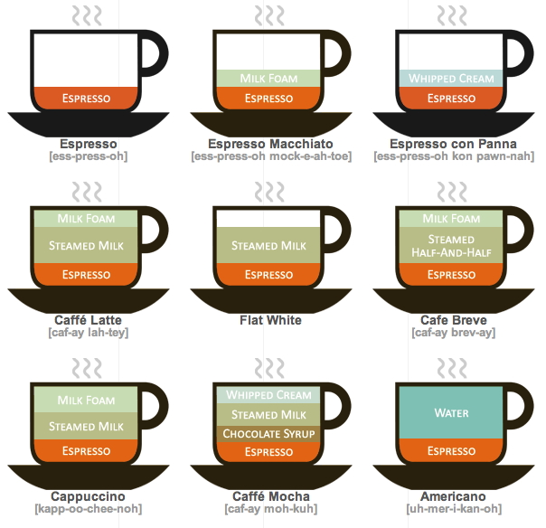
http://www.lokeshdhakar.com/2007/08/20/an-illustrated-coffee-guide/
a related
chart with more data relating caffeine and calories is http://www.informationisbeautiful.net/visualizations/caffeine-and-calories/
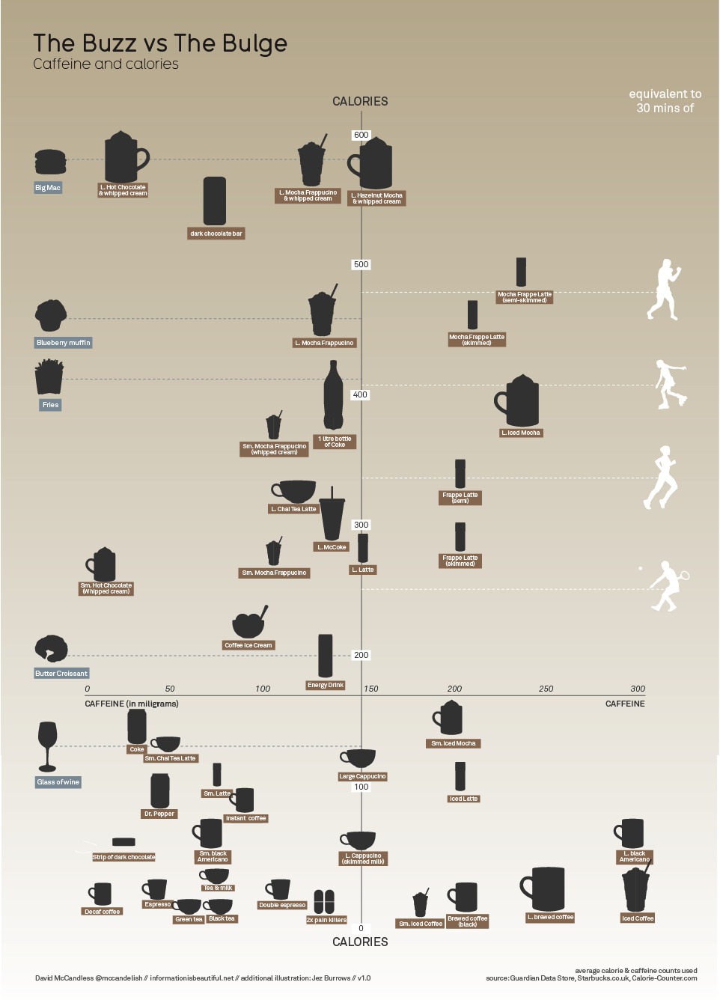
and how about
the growth in the number of Crayola Crayons where the number of
colours doubles every 28 years
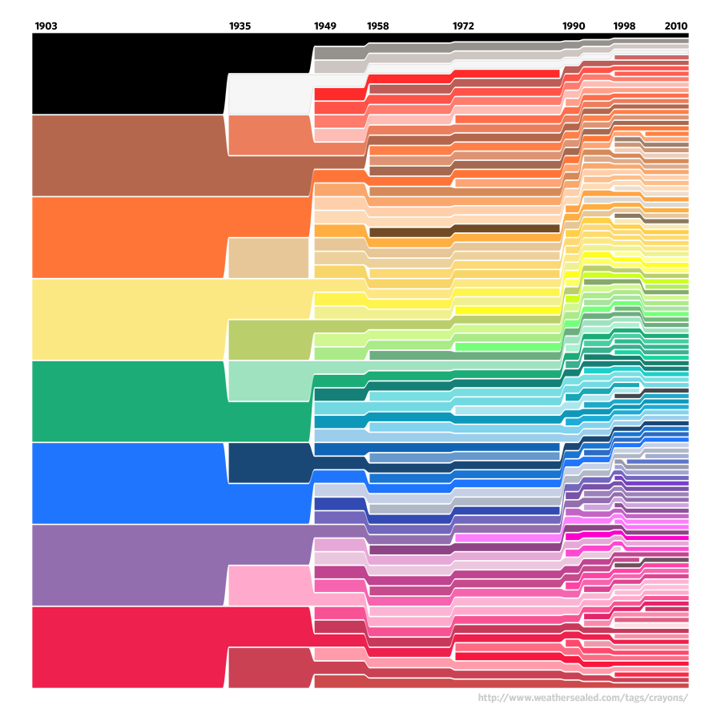
a couple casual info-viz tools:
wordle - http://www.wordle.net/
tagCrowd - http://www.tagcrowd.com/
e.g. a wordle comparison of Obama's Inaugural address to Bush's
first inaugural address where words that are said more often are
larger.
and here is a
tagCrowd version of the same speeches focusing on the top 50
uncommon English words in those speeches.
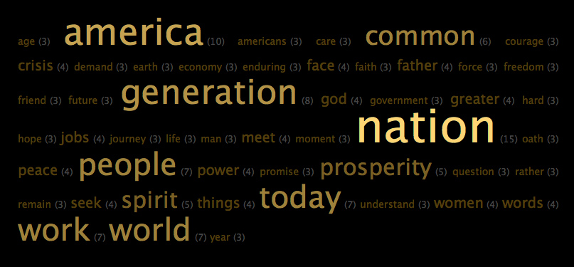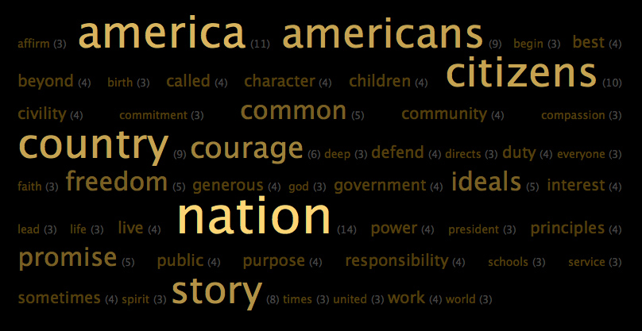
full texts
can be found at: http://www.presidency.ucsb.edu/inaugurals.php
and a site
doing similar things to US presidential speeches over time - http://chir.ag/projects/preztags/
Ben Fry has a
site looking at changes to Darwin's On the Origin of Species
through its various editions - http://benfry.com/traces/
and here was
a very nice political one looking at words in the congressional
record: http://www.capitolwords.org/congress/111/
here is an
archive link: http://web.archive.org/web/20091125090034/http://capitolwords.org/congress/111/
Which leads us into some more dynamic information
visualization tools that allow the user to interact with the
data.
Processing has a nice built in example to do this as well.
Once the map is drawn the user can
click on a large (or small) box and see it dentified in the
hierarchy, or click on part of the hierarchy and see its area.
Its easy to explore the larger files, much harder to explore the
smallest ones, unless one restricts the map to only a subset of
the hierarchy.
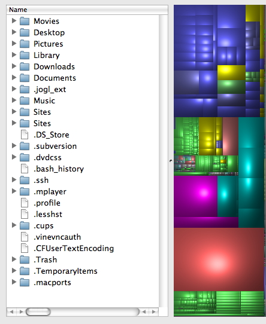
A similar
styled chart looking at relative amounts of dollars spent (or
lost) on various things is The Billion Dollar Gram -
http://www.informationisbeautiful.net/visualizations/the-billion-dollar-gram/
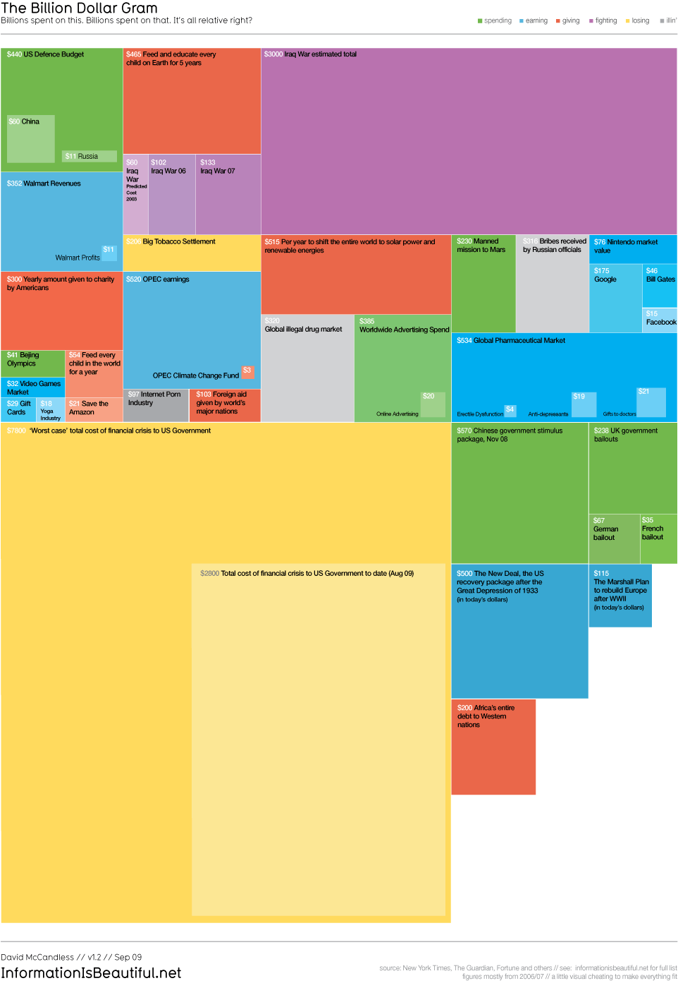
The BBC has a
nice treemap of the top 100 sites on the internet - http://news.bbc.co.uk/2/hi/technology/8562801.stm
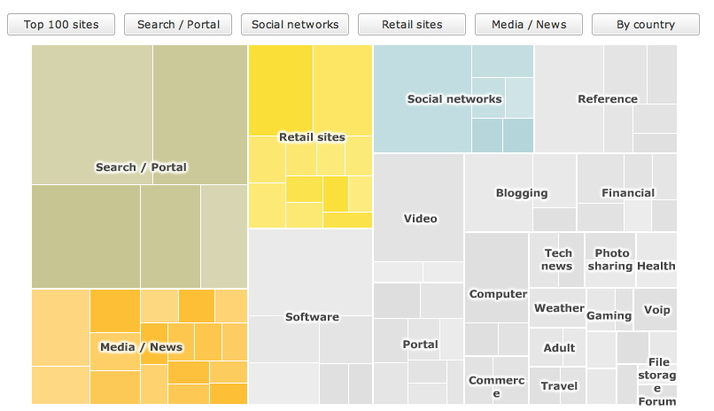
Newsmap shows
the news of the moment in a similar style - http://newsmap.jp
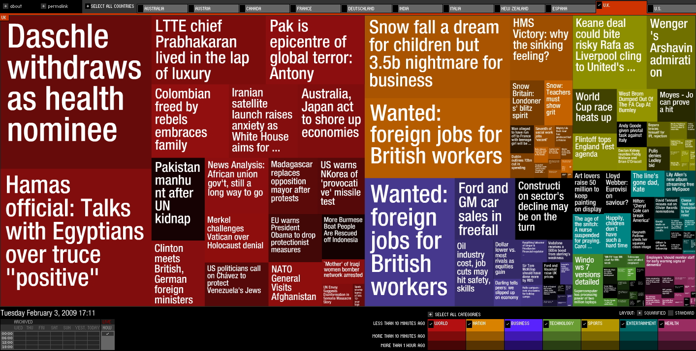
theme
river style:
http://www.nytimes.com/interactive/2008/02/23/movies/20080223_REVENUE_GRAPHIC.html
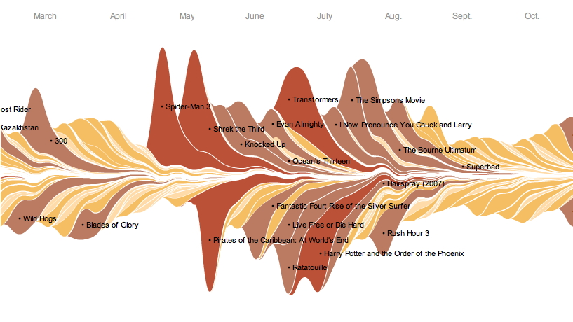
What are people doing in Japan?
http://www.xoxosoma.com/tokyo-tuesday/
and a similar one showing how people in the US spend their
days:
http://www.nytimes.com/interactive/2009/07/31/business/20080801-metrics-graphic.html?hp
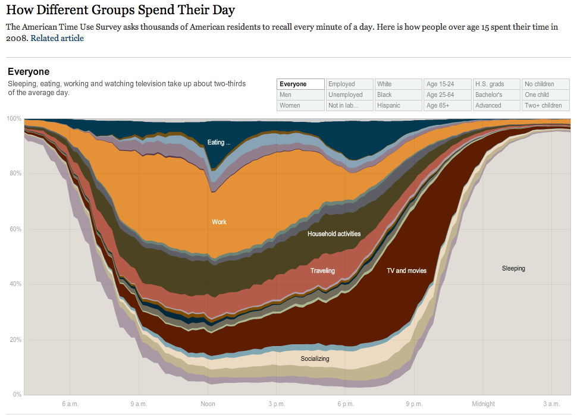
name voyager - http://www.babynamewizard.com/voyager
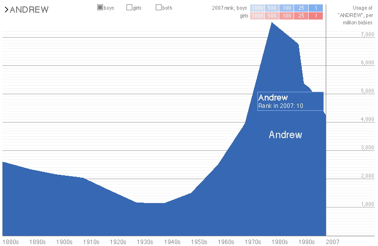
job voyager - http://flare.prefuse.org/apps/index
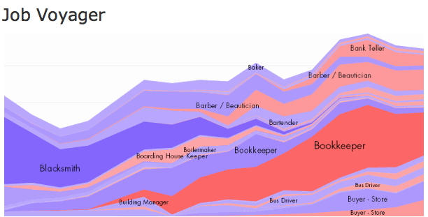
and something
similar with stocks from ManyEyes
http://manyeyes.alphaworks.ibm.com/manyeyes/visualizations/stock-data
another
similar interactive visualization is Google's ngrams
http://ngrams.googlelabs.com
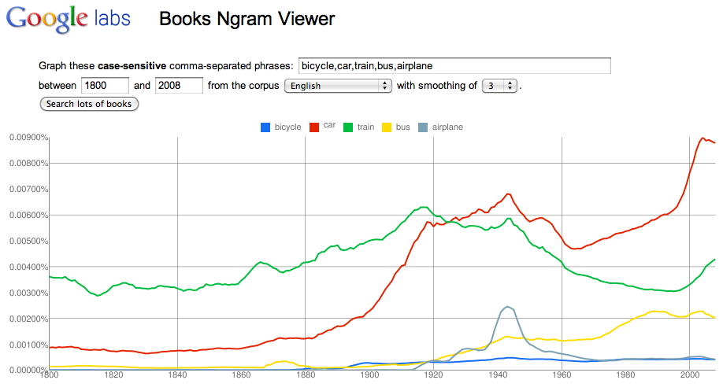
NY times
Billboard Rankings http://www.nytimes.com/interactive/2009/06/25/arts/0625-jackson-graphic.html?hp
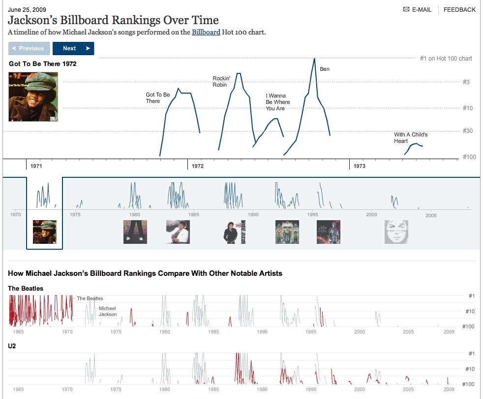
and another nice one related to the media of music http://www.nytimes.com/imagepages/2009/08/01/opinion/01blow.ready.html
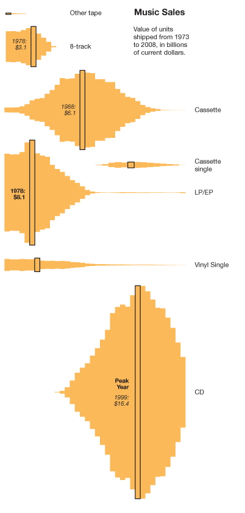
Traffic Fatality Visualization by John Nelson
http://uxblog.idvsolutions.com/2012/12/five-years-of-traffic-fatalities.html
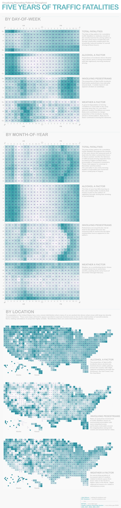
Here is a
visualization of 50 years of space exploration
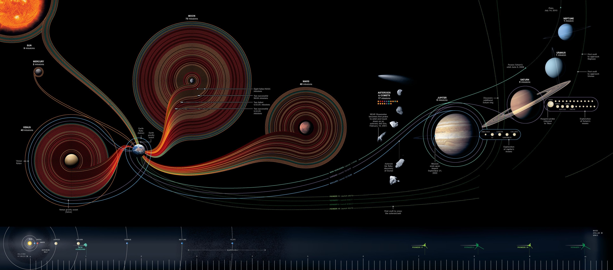
and the new
Google trends site is interesting http://www.google.com/trends
lots of good stuff here - http://www.math.yorku.ca/SCS/Gallery/timelines.html
and more modern stuff here - http://www.smashingmagazine.com/2007/08/02/data-visualization-modern-approaches/
growth of target (earthquake data is often visualized the same
way) - http://projects.flowingdata.com/target/
we will talk more about animation
later in the course. This one is very good for getting a
visceral feel for the rate of expansion and the locations, but
for more numeric comparisons it would be good to augment this
with a graph showing how many stores open per year across the
country or in different regions
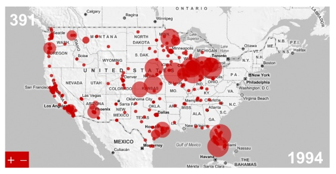
here is a site with lots of nice examples http://flowingdata.com/
London Underground Map by Harry Beck
Its more of a diagram than a map, as geography is less important
than visibility and consistency.
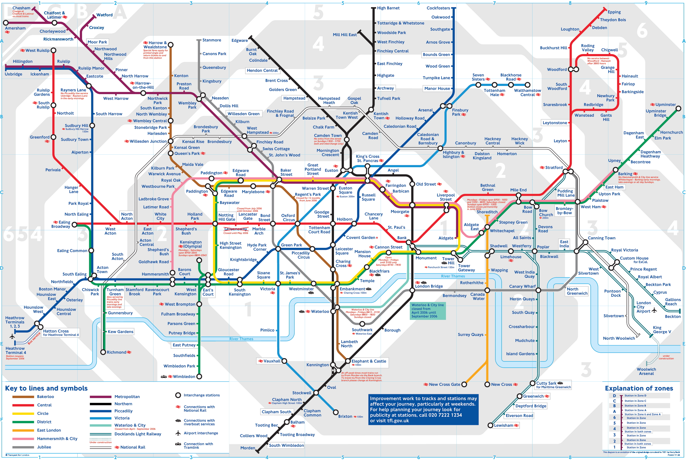
with a nice 25 minute video at:
http://smashingtelly.com/2008/10/16/design-classics-the-london-underground-map/
and a shorter 4 minute excerpt:
http://www.youtube.com/watch?v=Bg3pfUqdLp4
and you can see the history of the maps at:
http://homepage.ntlworld.com/clivebillson/tube/tube.htm
Compare this map of the CTA
http://www.transitchicago.com/assets/1/clickable_system_map/200806C.htm
to this map of the CTA
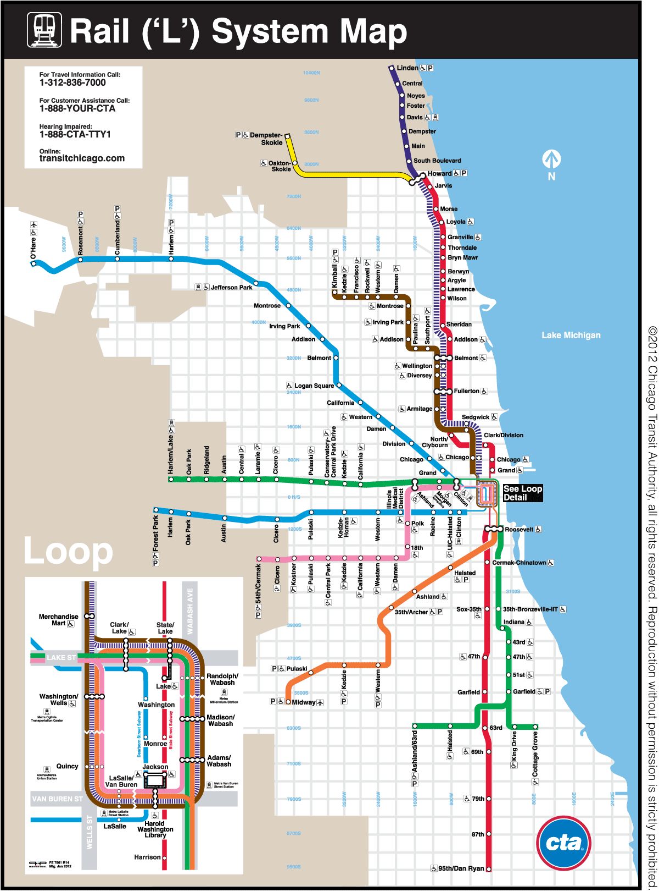
and to this map of the CTA
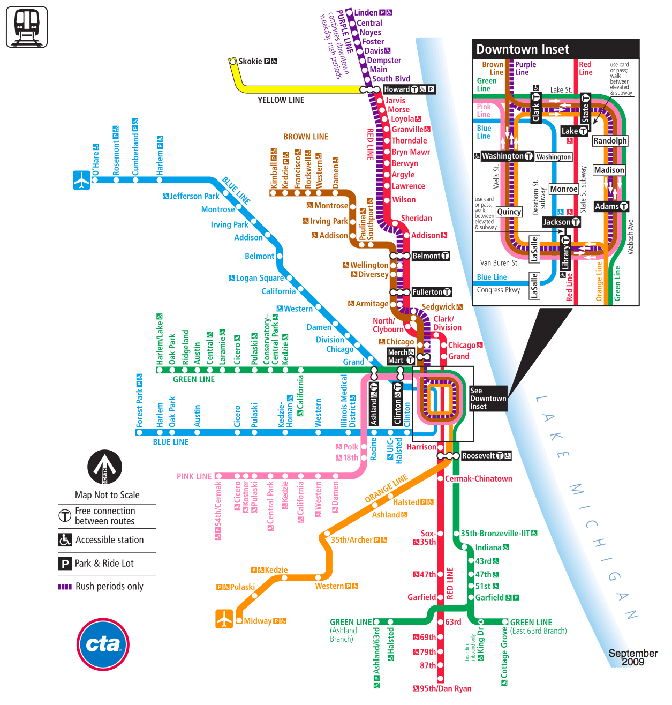
Line Map

Here is a
interesting way of visualizing the distance to nearby stats from
http://strangemaps.wordpress.com/ in terms of what Earth programs
they are just receiving (now a few years out of date):
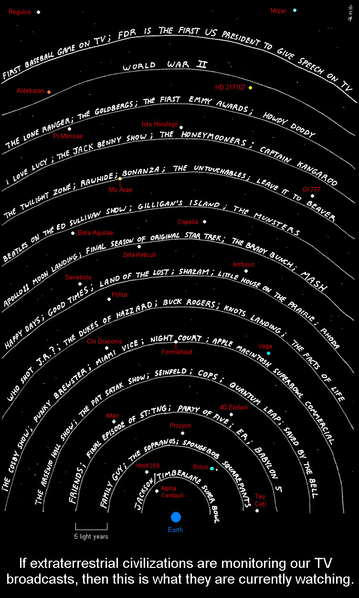
and a little closer to home, the history of Earth reduced to 24
hours from http://www.geology.wisc.edu
(though clocks are usually 12 hours per cycle)
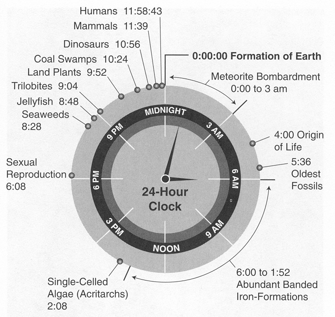
Here is a
nicely varied set of visualization of US Immigration data over
time from FlowingData.
http://flowingdata.com/2008/12/11/winner-of-tufte-books-and-many-other-good-entries/
and a nice visualization of current migration patterns
http://peoplemov.in
Here is a net
set of visualizations based on the number of deaths in the Rambo
movies from FlowingData
http://forums.flowingdata.com/topic/visualize-this-rambo-kill-counts
MIT's
eyebrowse had some interesting visualizations of browser history
in 2010 - http://web.archive.org/web/20100107030938/http://eyebrowse.csail.mit.edu/
and there are
a variety of things at chartporn.org
There
are
many
info-viz
tools
with
similar
abilities.
The
one
we
will
take
a
look
at
is XmdvTool, and it has a homepage at: http://davis.wpi.edu/~xmdv/
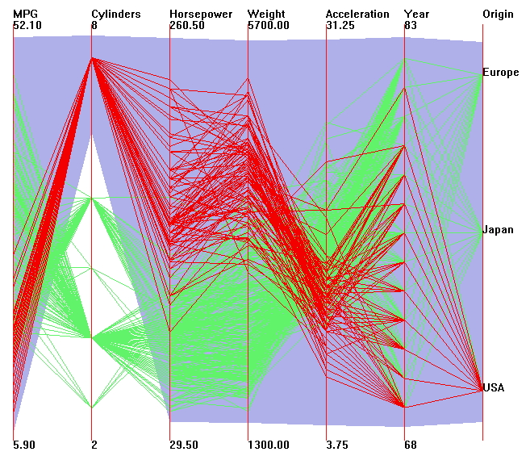
This next one, a scatter plot
matrix, is particularly useful since it lets a person get a
quick overview of the relationships between sets of variables to
know where to look deeper.
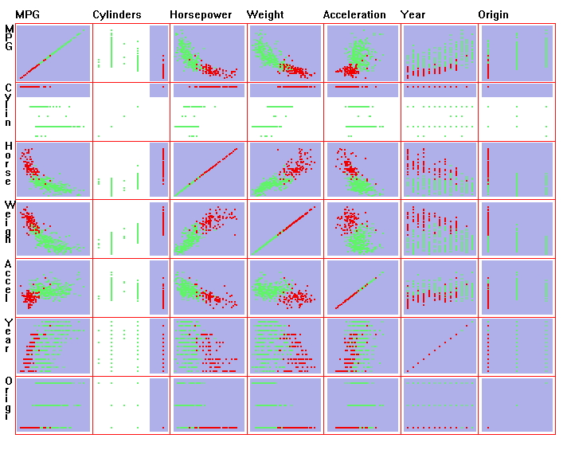
Another similar application that hasn't been updated
in a while is Mirage - http://www.bell-labs.com/project/mirage/
One that is still under development is GGobi http://www.ggobi.org/
nView in
the early 90s had an interesting twist on this by embedding a 2D
map into the parallel coordinates - http://www.youtube.com/watch?v=FI2Wm5CgHSE
Here are some notes
introducing Xmdv from a study done by one of our PhD students,
Kyoung Park, a couple years ago.
we will take a look at the cars dataset to get a
feel for the tool. The dataset is described at:
http://lib.stat.cmu.edu/datasets/cars.desc
Overall, there are 406 observations on the following
8 variables:
- MPG (miles per gallon)
- # cylinders
- engine displacement (cu. inches)
- horsepower
- vehicle weight (lbs.)
- time to accelerate from 0 to 60 mph (sec.)
- model year (modulo 100)
- origin of car (1. American, 2. European, 3.
Japanese)
Some of these are
continuous variables (MPG, displacement, horsepower, weight,
acceleration time)
Some are discrete variables (# cylinders, model year)
And one is categorical with no natural ordering (origin)
The XmdvTool site has a downloadable version of the
car dataset from the examples. In order to run it with the lite
version however you will need to edit the fcars.okc file so that
the top of the file looks like this:
7 392
MPG
Cylinders
Horsepower
Weight
Acceleration
Year
Origin
8. 50. 4
2.8 8.2 4
40. 250. 4
1500. 5500. 4
5. 30. 4
69.5 82.5 4
.8 3.2 3
18.000000 8.000000 130.000000 3504.000000 12.000000 70.000000
1.000000
Coming Next Time
Project 1 Presentations
last
revision 12/21/12 - added traffic fatality viz